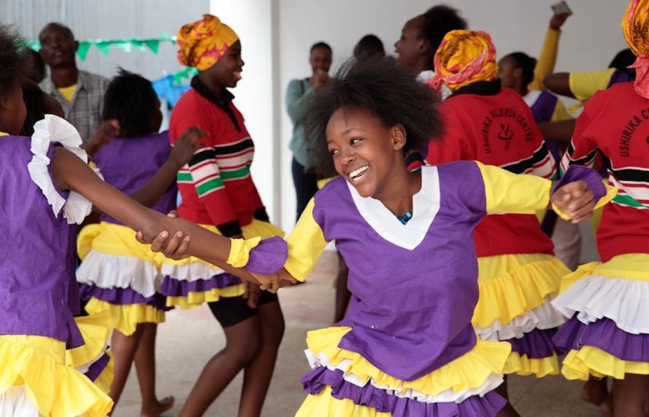
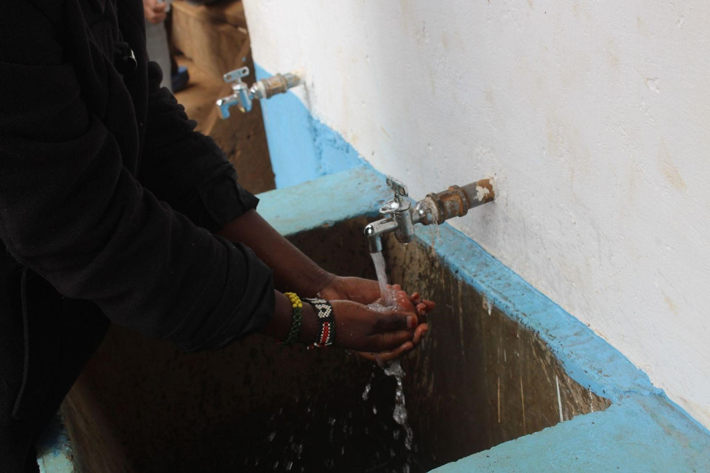
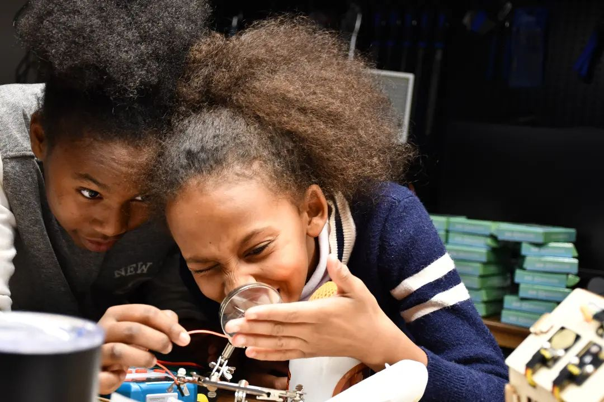
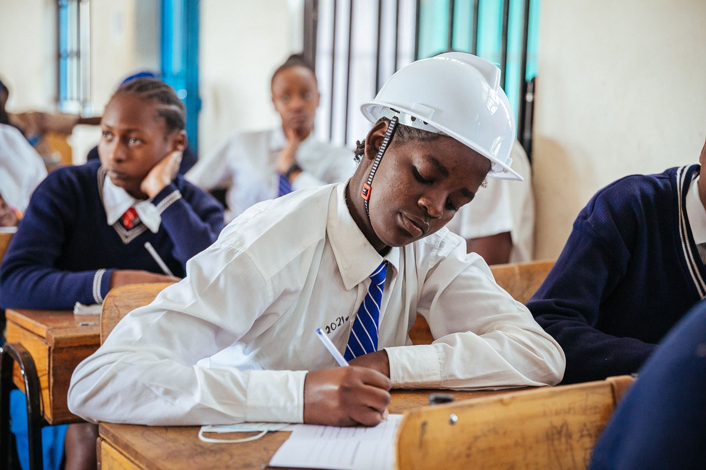

Peacebuilding
Clean water
Maji Mtaani
Water access for resilient communities
Safe, easy-to-reach water points for homes and schools across Kibera.
Clean water is scarce in Kibera. Collecting it takes time and effort, and unsafe water spreads disease.
What we do
Maji Mtaani installs safe, accessible water points across the settlement, serving both households and schools. Community campaigns and local partners spread the word about safe water and good hygiene.
Why it matters
- Better hygiene and fewer waterborne diseases
- Less time and effort spent collecting water
- Communities better prepared for climate-related water shortages
Results so far
Maji Mtaani has reached more than 5,000 residents. At Ushirika School, hygiene and attendance have both improved.
In pictures
Support Maji Mtaani
Give by M-Pesa or bank transfer in a few minutes, or talk to us about partnering on this project.
More projects
All projects
Digital skillsDigital Bridges
Read more about Digital Bridges
Education